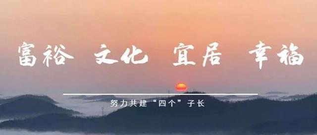
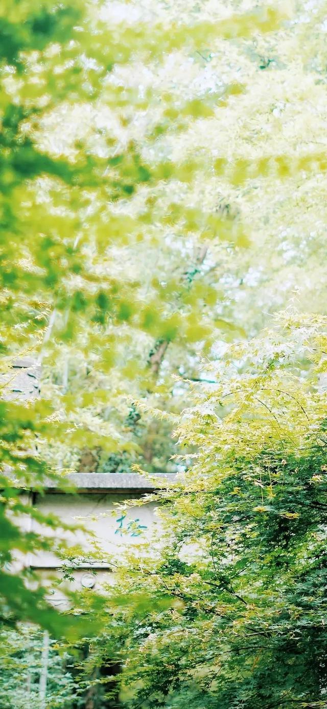

六月开启，
我们迎来了爽朗的夏天。
夏天是个怎样的季节？
它“一面是日光，一面是果香”，它“日朗气清，一切都像渗透了蓝色”，它“内在天真”。
以下是喜欢夏天的N个理由：
01
夏天才真正是美的，充沛、丰厚、浩大，全部盛开并不惜接近死亡，那才是高贵呢。
——史铁生《务虚笔记》

02
西瓜以绳络悬于井中，下午剖食，一刀下去，div咔嚓有声，凉气四溢，连眼睛都是凉
的。换一张大竹床放在天井里，横七竖八一躺，浑身爽利，暑气全消。看月华。月华
五色晶莹，变幻不定，非常好看。
02
西瓜以绳络悬于井中，下午剖食，一刀下去，咔嚓有声，凉气四溢，连眼睛都是凉的。换一张大竹床放在天井里，横七竖八一躺，浑身爽利，暑气全消。看月华。月华五色晶莹，变幻不定，非常好看。
——汪曾祺《人间草木》